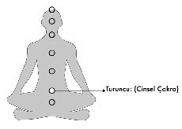

2- TURUNCU (CİNSEL ÇAKRA) YARATICILIK:
Göbek deliğinin iki üç parmak altında yer alan cinsel çakra, erkeklerde idrar kesesinin olduğu bölge, kadınlardaysa rahim bölgesidir.
Turuncu “Ki” topunun dengelediği cinsel çakra, hem cinselliğin deneyimlendiği hem de yaratıcılığın tetiklenip üretimin yaşandığı enerji merkezidir. Her türlü proje, düşünce, fikir, doktrin vb. cinsel çakrada yaratılır. Her yaratım, cinsel çakrada başlar.
Cinsellikle ilgili toplumların yüzlerce yıldır içine düştüğü duygusal ve bedensel sıkıntılar çok zaman toplumların kanayan yaraları haline dönüşse de din kitaplarının cinselliğe olan bakış açısı aslında görmek istemediğimiz kadar net ve açıktır. Cinsellik, dinler tarihinde hiçbir koşulda başkasına zarar vermediği ve rızası dışında yaşanmadığı sürece asla “günah” sayılmamıştır ve yasaklanıp baskılanmamıştır.
Bu bilgiyi paylaştığım bazı seminerlerde katılımcılar arasından itiraz edenler çok çıkmıştır. “Zina bütün din kitaplarında günah sayılır. Sen ne söylemeye çalışıyorsun Metin Bey?” diyenlerle daha önce defalarca rastlaştığım için, aynı soru işaretlerinin senin kafanda da belirdiğinin farkındayım.
Din kitapları yüzlerce yıl önce insanlığın hizmetine gelmiş görevli kitaplardır. Son kutsal kitap olan Kuran-ı Kerim bile bundan 1403 yıl önce insanlığa sunulmuş. O dönemde belediye başkanları olmadığına göre resmi nikâh akdi yapmak ve sosyal kurumlaşmayı sağlamak, akraba kardeş evliliklerine karşı önlem almak Kuran’ı Kerim’in 1403 yıl önceki karanlık toplumlar üzerindeki göreviydi.
Evlilik, resmi sözleşmelerle değil aşkla anlam kazanan ve yaşanan bir birleşmedir. Emin ol, varoluş senin evlenmek niyetiyle resmi evraklara attığın imzanın geçerliliğiyle zerre kadar ilgili değildir. O imzaları duygularına resmiyet kazandırmak için değil, yasal haklarını güvence altına almak üzere atarsın. Evlilikte ya da birleşmelerde esas olan kriter; aşkın varlığı ya da yokluğudur.
Biriyle bağ kurduğunda ve onunla aşk yaşadığında
zaten onun eşisindir.
Aşksız yaptığın ya da karşındaki insanla bağ kurmadan yaşadığın her şey din kitaplarının da işaret ettiği “zina”nın tam da kendisidir!
Bugüne kadar yaşadığın cinselliğini ve özel-duygusal ilişkilerini bir kez de bu açıdan bakarak sorgulayacak olursan, belki de eşinle yaşadığın şey zina sayılırken, sevdiğinle yaşadığının adı “AŞK” olacaktır...
Kadın ve erkeğin ilk kez aralarındaki mesafeyi erittikleri cinsellik, aslında artıyla eksinin, sağ ve solun birleştiği, hiçliğin ve nötrlüğün tam deneyimlenebildiği sıfır noktasıdır. İnsanoğlu içsel olarak yaptığı bu hareketle aslında “yaratmayı” dener. Bu yüzden cinsellik sadece birkaç hormonun ve nöronun uyarıldığı yer değil, yaratıcılığın tetiklendiği enerji merkezidir. Kuran-ı Kerim’de Allah’ın isimleri arasında yer alan “Rab”, “Rahman” ve “Rahim”, tekâmülü programlayıp yöneten, rahmeti (yaratıcılığı) sunan ve bunu kullanıma açan anlamlarına gelir. Cinsellik başka bir insan evladını yani varoluşun yeni bir suretini yaratarak hayat oyununa dahil etme işlemidir. İşte bu büyük ve kusursuz oyunun değiştiği yerin adı da rahim’dir.
İşte bu yüzden:
Biriyle ilişkideyken bile, özgürleşmeye çabalamalısın...
Tarihler boyu bütün dini kurumlar cinselliği her zaman baskılama, sınırlama ve yasaklama yoluna gitmişlerdir. Dinler ve kutsal kitaplar; içinde aşk olduğu, başkasına zarar vermediği ve rıza dışı olmadığı sürece cinselliği onaylarken, din adına sonradan insanlar tarafından yapılandırılan dini kurumlar cinselliği yasaklamış ve baskılamıştır.
Cinselliğini rahat, korkusuz, suçluluk hissetmeden ve mutlu yaşayan insanları tehdit olarak gören devlet politikaları, dini kurumları bu tehlikeye karşı önlem olarak desteklemişlerdir çünkü cinselliğini rahat yaşayan toplumlar mutlu olurlar.
Mutlu cinsellik yaşayan insanlar, artık evrenselliğini hissetmiştir ve içsel uyanışında biraz daha ileri adımlar atmışlardır.
Devletlerin ve dini kurumların seni görmek istemeyeceği mertebe, senin mutlu ve aydınlanmış, bilge biri olmandır.
Böylece ne kadar varoluştan uzak kalırsan ve günahkâr olduğun suçluluğuyla kendini mutsuz ve eksik hissedersen kurumlar senin ruhsal, zihinsel ve bedensel gelişimin üzerinde o denli kontrol sahibi olacaklardır.
Hıristiyan çocukların doğar doğmaz günahkâr ilan edilmelerinin altında da yine aynı baskılama ve suçluluk yaratma hedefi yatar. Hıristiyan çocuk dünyaya gözlerini açar açmaz “Sen günahkârsın çünkü Hz. İsa; senin günahlarının affedilmesi için kendini feda ederek çarmıha gerildi” suçlamalarıyla karşılaşır ve henüz işlemediği günahların bütün ruhsal bedellerini ödemeye başlar.
İslamiyet’te de çocukların “Ona bakma cehennemde yanarsın!” “Böyle konuşma çarpılırsın!” “Sol elini kullanma günahtır!” gibi binlerce hurafeyle suçluluk duygusuna terk edilmeleri, mutlu ve aydınlanmış bireyler olabilmelerinin önüne çekilen büyük setlerdir.
Hormonlarının aktif olduğu anlar, senin cinselliğini başkasına zarar vermeden, rızası dışında baskıyla yaşamadığın sürece özgürce deneyimleyebileceğin süreçlerdir. Doğa sana bunun doğru zaman olduğunu fısıldamış, hormonların aktive olmuş ve karşındaki insanla bağ kurmak üzere iletişim başlamıştır. Fakat dini kurumlar her durumda günahkâr olduğuna seni ikna etmeye ve baskılamaya, varoluşla kurduğun bağlantı için onlara ihtiyacın olduğunu kabul ettirmeye devam edeceklerdir. Sen de yaşayamadıkların için pişmanlık; yaşadıkların içinse suçluluk hissederek hayatını sürdüreceksindir.
Aydınlanmış insanların, dini kurumlara ihtiyacı olmadığından onlara yersiz bir saygı ve itibar göstermezler çünkü onlar varoluşla bir olmanın yolunu biliyorlardır ve aracı kurumların rehberliklerine muhtaç değillerdir.
Eşcinsellik günah mıdır?
İlişkiyi yaşayanlar arasında zorlama ya da baskı yoksa taraflar seçimlerini kendi özgür iradeleriyle yapmışlar ve bu kararlarından dolayı da memnunlarsa, hiç kimsenin onları zerre kadar yargılama hakları yoktur.
Varoluş sana da, ne yapmak istediğini sordu ve sen de bugün yaşadığın şeyi tercih ettiğine göre, yanındakinin hangi seçimi yaptığını eleştirmek senin haddine düşmediği gibi aslında kimseyi de ilgilendirmez.
Ortada bireye karşı yapılan bir zulüm, zarar ve işkence olmadığı, bir insanlık suçu işlenmediği müddetçe insanların cinsel hayatlarını yargılamak hiçbirimizin görevi değil.
“Cinsellik” konusuyla ilgili yüzlerce yıldır insanoğlunun içine atılan çapaların yerlerinden sökülerek çıkarılması kolay değildir.
Cinsel çakra hastalıklarını kadınların erkeklere göre daha yoğun yaşamaları da tesadüf sayılmaz. Toplumsal baskıların ve geleneksel öğretilerin kadın üzerinde yarattığı travma, kadının cinselliğinden dolayı suçluluk hissetmesine, dolayısıyla da bir dizi cinsel çakra rahatsızlıkları yaşamasına neden olmaktadır.
Ben 31 yaşında olduğum halde henüz hayatımda bir kez bile üroloğa gitmemişken, aynı yaşlardaki kız arkadaşlarım farklı nedenlerle defalarca muayene oldukları jinekoloğa, artık düzenli aralıklarla daha sık devam etme gerekliliği hissediyorlar.
Çocukluk yıllarından beri cinsellikleriyle ve bunu yaşama biçimleriyle ilgili daha yoğun eleştirilen, yargılanan ve ağır toplumsal sorumluluklar üstlenen kadınlar, doğal olarak ruhsal ve fiziksel açıdan cinsel sıkıntılar yaşarlar.
Çocukluk çağlarından beri cinsel kimlikleriyle desteklenen, onaylanan, rahat ve özgür bırakılan erkeklerin, kadınlara göre daha sağlıklı ve sorunsuz bir cinsel hayat yaşamaları da bu yüzden kimseye şaşırtıcı gelmemeli. Erkek cinselliğini yaşarken “aslan oğlum” ya da “çapkın adam” yorumlarıyla bir kez daha toplumsal onay alırken, kadının cinselliğini özgürce yaşamasının bedeli onun “fahişelikle” suçlanarak aile ve sosyal çevresi tarafından aforoz edilmesiyle ödenebiliyor.
Kadın ve erkeğin ortak paydada bir araya gelerek yaşadıkları cinsel deneyimden sonra taraflardan birinin kendisini rahat ve mutlu hissederken, diğerinin suçluluk duymasında sence de rahatsız edici bir haksızlık yok mu?
İki kişilik bu oyundan sonra bir kişinin mağdur olarak sahayı terk etmesindeki problem, yaşanan deneyimden değil, farklı zihin yapılarından ve hissediş şekillerindendir...
Cinsel rahatsızlıklarından dolayı gelen hastalarımın her birinde genel olarak gördüğüm temel sorun; kişinin cinselliğiyle ilgili hissettiği derin suçluluk duygusu...
Erkekler yaşadıkları ilişkileri ertesi gün arkadaşlarına heyecanla ve mutlulukla anlatabilirken, aynı şeyi yaşayan kadının sabah kendini kötü ve suçlu hissederek uyanması ya da olayı dramatize ederek içselleştirmesi, sadece gelenekçi bireylerde değil, oldukça modern görünen ancak içsel olarak konuyla ilgili ne kadar ön yargılı olduğunun farkında olmayan kişilerde de yaşanıyor.
Uzakdoğu’da fahişelik yapan kadınlar, kültürel bir geleneği de devam ettirdiklerinden aileleri tarafından el üstünde tutulurken ve üstelik travestilik de burada olağan karşılanırken yazık ki ülkemizde bu sebeplerden dolayı sayısız cinayetler işlenmeye devam ediyor. Bu açıdan bakacak olursak insanların cinselliği kültürel yapılarının bir parçası olarak şekillendirdiklerini görürüz. Oysa cinselliğin, kültürel sorumlulukları ve görevleri yoktur.
Cinsel rahatsızlık yaşayan, ancak modern ve ileri görüşlü bir kadın olduğundan dolayı cinselliğini baskılamadığını, bundan dolayı da hiçbir zaman suçluluk duymadığını iddia eden bir hastama, anne ve babasının ilişkisini sorduğumda yüzleşmekten kaçındığı cevabı kendisi yakalamıştı.
Hastamın annesi ve babası sürekli kavga ediyordu hatta adam karısını tekme tokat döverek, yerlerde sürüklemeye bile kalkışıyordu. Olan biteni saklandığı yerden izleyen hastam, annesini hep dayak yerken ve aşağılanırken görmüştü. Ona göre annesi saygı duyulan, sevilen bir kadın olmadığı gibi, yapacağı her şey için babadan izin almak zorunda olan âciz bir yaratıktı. Henüz küçük bir kız çocuğu olmasına rağmen bilinçaltında kadınlığına düşmanlık duymaya başlamış ve bu şekilde yıllar içinde cinsel çakrasını parçalayıp durmaya devam etmişti. Bugün de hasta olarak karşımdaydı.
Cinsel çakra problemleriyle ilgili sayısız vakayla karşılaşmış biri olarak sık gözlemlediğim sıkıntılardan biri de kadının sağlıklı olduğu halde hamile kalamamasıdır. Hormon testleri düzgün, rahim bölgesi sağlıklı olduğu halde yıllar içinde hamile kalamadığından yakınan hastalarımın cinsel çakralarında ciddi blokajlar söz konusuydu ve her ne kadar sağlıklı da olsalar hamile kalmaları bu şartlarda zordu. Taşıdıkları suçluluk duygusundan dolayı bedenleri yaşamayı arzu ettikleri hamileliği baskılıyor ve bunu deneyimlemelerine izin vermiyordu.
Her üç erkekten biri HPV virüsü (cinsel yolla bulaşan bir hastalık-jenital siğil) taşıdığı halde, bununla ilgili hiçbir semptom göstermezlerken, virüsü erkekten alan kadında siğiller çıkmasının altında yatan neden yine “suçluluk duygusu”dur.
Erkekler taşıyıcı oldukları halde genel olarak bu virüsle ilgili sorun yaşamazlar. Çünkü cinsellikleriyle ilgili suçluluk bağları yoktur. Bu yüzden de bedenleri taşıdıkları virüsü sürekli baskılar ve semptom oluşmasına izin vermez.
“Virüslerin suçluluk duygusuyla ne ilgisi var, virüsler bulaştığı her insanı hasta eder” diye düşünüyorsan eğer, sana HIV virüsü taşıdığı halde AIDS olduğunu anlamadan yaşayan insanlar olduğunu hatırlatırım hemen.
HIV virüsü taşıdığı halde AIDS’le ilgili hiçbir semptom vermeyen birçok insan var yeryüzünde. Hastalık hissetmediklerinden dolayı doktora gitmedikleri için, tıp bunları sıkça teşhis edemese de, insanı asıl hasta eden şeyin virüs olmadığını söylemek zorundayım.
Örneğin, her soğuğa maruz kalan insan grip olmaz. Grip olan kişi soğuğa maruz kaldığını düşündüğünden grip olur. Mesela geçtiğimiz haftalarda bir arkadaşımla uzun saatler soğukta kalmamıza rağmen o hastalanırken bende hiçbir sorun ortaya çıkmadı. Bu yüzden yaşanan hastalıkların mikrop ya da soğukta kalmak gibi sadece dış faktörlere bağlı olmadığını artık anlamanı istiyorum. Hastalık tecrübelerinde de zihin yapısı çok önemlidir.
Cinsel çakrada yaratılan en belirgin ve çok sık rastlanan rahatsızlıklardan biri de migrendir.
Migreni olanlar genelde çok yaratıcı kişilerdir ve yazık ki günlük hayatlarında bu yeteneklerini ifade etme olanağı bulamamışlardır.
İçinde oyunculuk, ressamlık, heykeltıraşlık, yazarlık ya da müzisyenlik olan birinin yeteneklerini kullanabileceği bir iş yapmak yerine yaratıcılığını zerre kadar ifade etme imkânı olmayan mesleklerde ömür harcaması, onun neden migren atakları yaşadığını açıklar.
Migrenin iyileştiği yer, cinsel çakradır! Cinsel kimliğin oturmasıyla ya da sağlıklı cinselliğin yaşanmaya başlamasıyla düzelme görülebilir. Bu yüzden Anadolu’da başı ağrıyan genç kızlara “evlenince geçer” diyen haminneler, aslında doğru bir teoriye parmak basmış sayılırlar.
Migren ataklarının geçmesinde en önemli faktörlerden biri de çocuk doğurmaktır! Şiddetli migren ağırları çeken işkadınlarının yaklaşık yüzde 60-70’inin doğumdan sonra iyileşme gösterdikleri saptanmıştır.
Bu anlattıklarımdan “sevişen insanlarda migren olmaz” sonucuna ulaşmadığını ümit ederek, konuyu tek düze bir mantıkla irdelememeni öneririm. Cinsel çakranın sadece cinselliğin değil aynı zamanda yaratıcılığın da merkezi olduğunu hatırlarsan, doğumdan sonra ya da sağlıklı ve düzenli cinsel hayatlarına rağmen migren ağrıları iyileşmeyen vakaların, yaratıcılıklarını da desteklemeye ihtiyaç duyduklarını anlamalısın. Herkesin farklı blokajları olduğundan, bütün migren vakaları için aynı sonucu öngöremezsin.
Fren arabanı yavaşlatmaya yarasa da duvarın dibine geldiğinde frene basmak, arabanı duvara çarpmaktan kurtarmayacaktır. Dolayısıyla cinsellik migreni iyileştiren parametrelerden biriyse de, aracını yavaşlatmaya ve seni kurtarmaya yetmiyorsa, yaratıcılığı ifade etme seçeneğini de devreye sokmalısın. Bunlar dengelendiğinde migren mutlaka iyileşme gösterecektir.
Migrenin en büyük tetikleyicisi beta beyin dalgası olduğundan, şiddetli migren ağrılarıyla gelen hastalarıma önce nefes çalışmaları yaptırarak beyin dalgalarını aşağıya çekerim. İkinci aşamada cinsel çakrayla ilgili enerji çalışmaları verip son olarak da yaratıcılıklarını desteklemek adına onlara takı tasarım, resim, dans ya da seramik kursları gibi yaratıcı aktiviteler öneririm.
Dünyaya yaratmayı öğrenmek güdüsüyle gelen insanoğlunun, üretmediği takdirde hastalanması son derece normaldir. İnsan ancak ürettiğinde yaşadığını hissedebilir.
“Yaratarak var olmak” iyileşmektir. Her saniye kendini yaratırsın.
Ev kadınlarının panik atak, baş ağrıları, migren ya da cinsel çakra sorunlarını daha sık yaşamalarının nedeni de hiçbir şey üretmeden yaşamlarına devam etmeye çalışmalarıdır. Yaratıcılık adına sürekli aynı şeyi yapanlar da bir süre sonra mutsuz olurlar çünkü içerideki ruh her zaman değişimi ve gelişimi arzular. Bu yüzden de kişiye artık yeni bir şeyler yapması gerektiği yolunda baskı yapar.